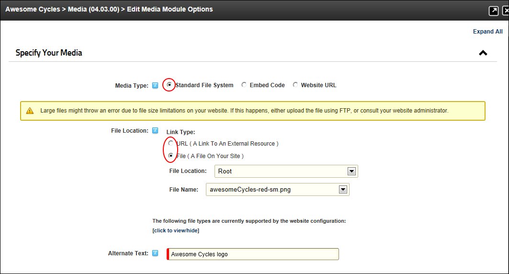
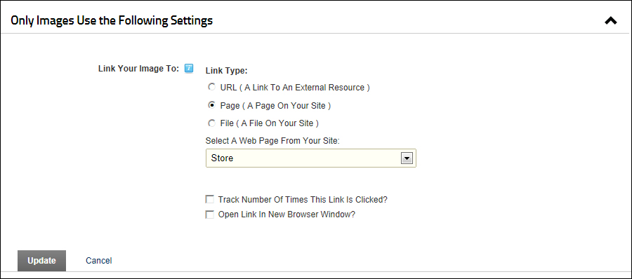
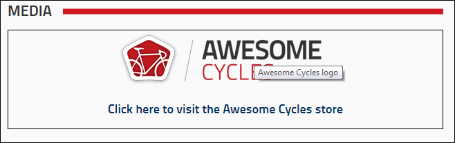
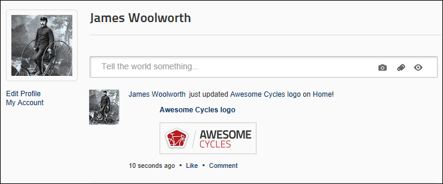

Displaying an Image with an optional Link
The Media module can be set to display an image that can be located either within your site or an external web resource. A link can be associated with the image allowing the image to function as a button. A rich text description that will be displayed below the image can also be added.
- Select
 Edit Media Options from the module actions menu.
Edit Media Options from the module actions menu.
- Expand the Specify Your Media section.
- At Media Type, select Standard File System.
- At File Location/Link Type select either a URL or File link to the image. See "Setting a URL Link", "Setting a File Link", or "Uploading and Linking to a File"
- In the Alternate Text text box, enter the text to be displayed when a user hovers their mouse over the image.

- Optional. Expand the Basic Settings section.
- In the Width text box, enter a width in pixels to override the actual image size.
- In the Height text box, enter a height in pixels to override the actual image size.
- In the Description of the Media Editor, enter and format text to be displayed below this image.
- At Media Alignment, select either None, Left, Center or Right to set the alignment of the image. If no option is selected the default setting Use Module Settings Value is used.

- Optional. Complete the following steps to add a link to this image, or skip to Step 5 if there is no link on this image.
- Expand the Only Images Use the Following Settings section.
- At Link / Link Type, select URL, Page or File as the link type and then set the link. See "About the Link Control"
- Optional. At Track Number Of Times This Link Is Clicked?, to display the number of times this link is clicked on this screen once the record has been updated.
- Optional. At Open Link In New Browser Window?, to display the media in a new Web browser - OR - to display in the existing Web browser.

- Optional. To share this media on your Journal, expand the Social Integration section.
- At Post To Journal, to post details of this media to your Journal - OR - to add the media without posting to your Journal. Note: If this setting has been pre-set by an Administrator for all Media modules on this site, then you will be prevented from changing this setting without first checking the "Override Site Settings" check box below.
- At Override Site Settings, to override the site wide settings for Media modules that has been set by an Administrator - OR - to use the site wide settings.

- Click the Update button. The image will now be displayed and (if chosen) posted to your journal.

The image displayed on the Media module
Note: A one (1) pixel border has been set on the module pictured above. See "Configuring Basic Page Settings for Modules"

The Journal post (displayed on the user's profile page)